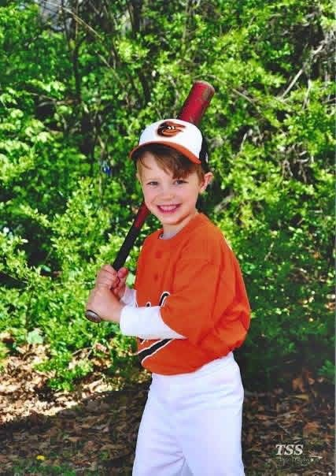
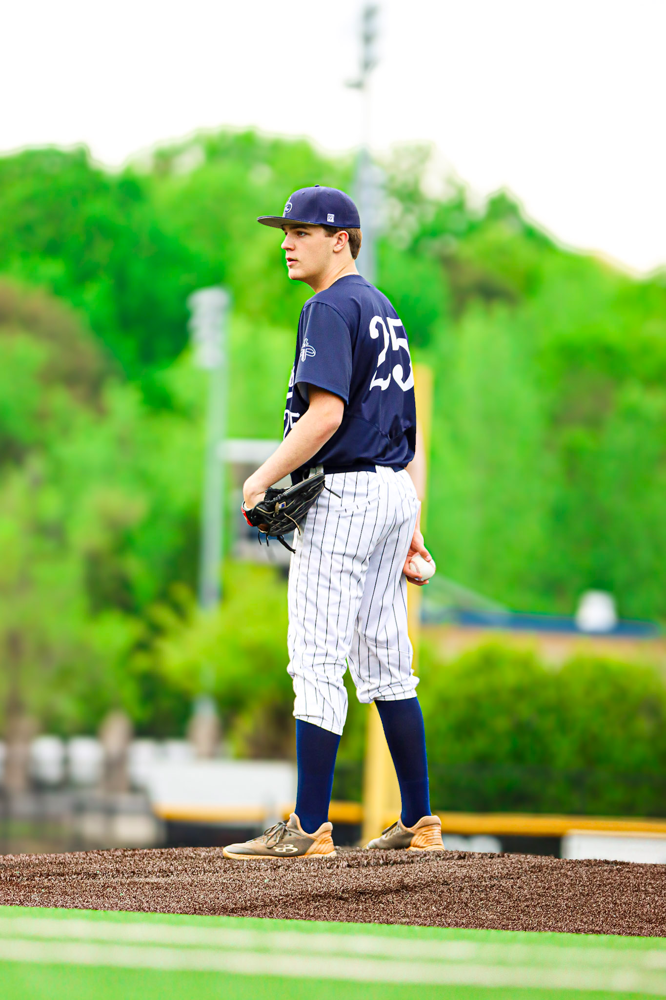
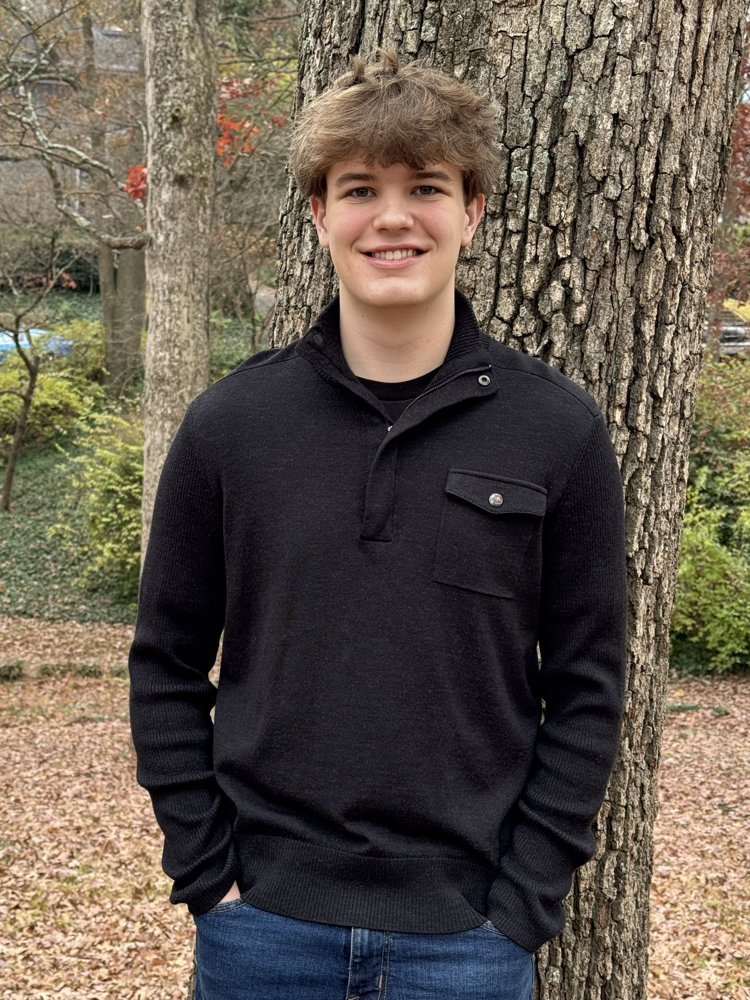

Pace Academy, Atlanta · Class of 2027
Rising senior. Twelve years of baseball. An AP thesis on MLB integration. Then an AP oral history with a noted sports journalist who has written about Hank Aaron and MLB integration issues. And a 2,020-mile road trip that connected baseball and integration.
I've played baseball since I was five. It's been a constant my whole life. When you're a kid you think you'll be a MLB player. When you get older you think you could play in college. I've gotten better at baseball, especially as a pitcher, but sometime in the last year I realized that I won't play beyond high school. Even when it has been tough, baseball has always been something I loved and enjoyed. I had never really thought about the role of baseball in our history, how integration occurred, and how we wound up with baseball as we know it today. But this past year it started meaning something different. In AP African American Studies, I wrote a thesis on the integration of Major League Baseball. The more I researched, the more I realized how much of that story I didn't know. The Negro Leagues, the players who never got a shot, the towns and ballparks that still carry that history. None of it shows up in the box scores.
That research is what pushed this expedition from an idea into something I actually had to do. Inspired by my oral history interview with Mr. Terence Moore, I wanted to go to Kansas City to see the Negro Leagues Baseball Museum and meet one of my heavily cited sources, Mr. Bob Kendrick.

Age 5. The beginning of twelve years.
I pitch for Pace Academy's varsity team. Baseball has taught me most of what I actually know about competing and handling failure. When things aren't going your way on the mound, you have to stay in the moment. You can't carry the last pitch into the next one. That carries over into everything else I take on.
The thing that drove this expedition is something I've always done naturally: I talk to everyone. Teachers, strangers at a museum, the president of a national institution. On this trip, that turned into the most important part of the whole experience. The exhibits mattered. The conversations mattered more. Bob Kendrick, the president of the Negro Leagues Baseball Museum, sat with us and talked for a long time. He didn't have to do that. I asked him everything I'd wanted to ask since I started my thesis.

On the mound for Pace Academy, #25.
I've put in over 400 hours of community service across 16 different organizations, mostly working as a summer camp counselor with kids. I kept going back because I'm good with kids and I genuinely like the environment. It keeps you grounded in a way that's hard to explain until you've done it.
Through YMSL, I've held leadership positions at the grade level and earned the Superior Service Award in 2024-2025. I'm also part of the ICGL Fellows Program at Pace, focused on social innovation, and I serve as a Student Ambassador and National Honor Society member.
I'm actively exploring colleges with a focus on business and finance. I want to find a place where I can keep building real relationships and get early exposure to how the business world actually works. This expedition reinforced something I already knew about myself: I do my best learning when I'm in the room, not just reading about it.

Atlanta, 2025.
The full route, the stops, the conversations, and the things that stuck. 2,020 miles in five days across eleven states.